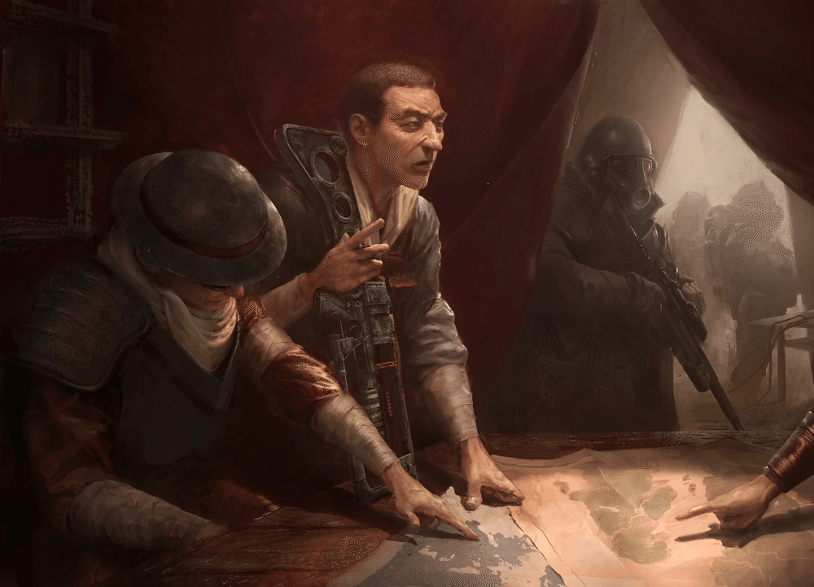

アラデシュ
アラデシュは、もともと Vault 15 の居住者でした。
2041年に Vault が開放された際、彼は他の居住者たちと共に荒野へと出ました。
しかし、Vault 15 内部での派閥争いや文化的な相違により、居住者たちは分裂しました。
アラデシュは彼を信奉する一団を率いて東へと向かい、高効率な灌漑システムと農業技術を駆使して、荒野の中にシェイディ・サンズという定住地を築き上げました。
彼は非常に知的で用心深く、また精神的に高潔な人物として知られています。
彼は「ダルマ」と呼ばれる独自の哲学や宗教的信念を持っており、それは共同体の調和と生存を維持するための指針となっていました。
彼は一人娘であるタンディを深く愛しており、彼女がこの過酷な世界で生き抜くための教育を施していました。
Fallout 1 での役割

2161年、Vault 15 に手がかりを求めてやってきたVaultの居住者 (Vault Dweller) がシェイディ・サンズを訪れた際、アラデシュは彼らを迎え入れました。
彼は当初、部外者に対して警戒心を持っていましたが、Vaultの居住者 (Vault Dweller) が村を脅かしていたラッドスコーピオンの脅威を取り除いたことで、深い信頼を寄せるようになります。
その後、彼の娘であるタンディがレイダーの一派であるグレート・カーンズ によって誘拐されるという事件が発生します。
アラデシュは絶望に打ちひしがれながらも、Vaultの居住者 (Vault Dweller) に娘の救出を依頼しました。
無事にタンディが救出されたことで、彼はVaultの居住者 (Vault Dweller) を村の英雄として称え、将来的な地域協力の礎を築きました。
NCR の創設と大統領職
シェイディ・サンズは、アラデシュの指導の下で急速に発展しました。
2186年、シェイディ・サンズを中心とした近隣の定住地（ハブやジャンクタウンなど）が連合し、新カリフォルニア共和国 (NCR) が正式に発足しました。
アラデシュはその卓越した指導力とカリスマ性から、満場一致で初代大統領に選出されました。
大統領としての彼は、文明の再建と法の支配を確立することに全力を注ぎました。
彼の統治下で、NCR はバラモンの牧畜や農業を基盤とした強固な経済基盤を確立し、荒野における最大の秩序勢力へと成長しました。
最期と遺産
2196年、アラデシュは突然の失踪を遂げました。
記録によれば、彼は「大戦」の真実と世界の起源を解明するための旅に出た後、消息を絶ったとされています。
彼の失踪後、娘であるタンディが第2代大統領に就任し、父の遺志を継いでNCR をさらなる黄金時代へと導きました。
アラデシュは、文明が崩壊した後の世界において、単なる略奪や生存を超えた「社会」と「道徳」の再構築に成功した稀有な人物として、NCR の歴史にその名を刻んでいます。
注目の所持品
アラデシュのローブ
彼の指導者としての地位を示す、特徴的な衣装です
スピア
護身用の武器ですが、彼は平和主義を重んじていました
ダルマの経典
彼の哲学が記された文書です
印象的な引用句
挨拶、旅の人よ。
あなたが我々の門をくぐったのは、運命の導きかもしれない。
この世界は影に覆われているが、我々の中にはまだ光が残っている。
我が娘、タンディは私の魂そのものだ。
彼女を失うことは、この村の希望を失うことと同じなのだ。
どうか、彼女を連れ戻してほしい。
ダルマの教えは、力ではなく調和にある。
我々がバラモンを育て、土を耕すのは、単に腹を満たすためではなく、人間としての尊厳を取り戻すためなのだ。
アラデシュというキャラクターは、Fallout シリーズの歴史における「文明の父」とも呼べる非常に重要な人物です。
カリスマ的指導力: 混沌とした荒野で Vault 15 の分裂という困難を乗り越え、法と秩序に基づく国家 NCR の基礎を作り上げた功績は計り知れません。
ダルマの教え: 彼の持つ宗教的・哲学的な背景は、単なるサバイバルガイドではなく、文明を維持するための精神的支柱として機能していました。これが後の NCR の規律正しさにも繋がっているように感じられます。
謎に包まれた最期: 初代大統領という輝かしい地位にありながら、最期は世界の真実を求めて失踪するという結末は、彼の探究心の強さと、物語としての神秘性を高めています。
コミュニティ維持のため、寄付を受け付けております。
> COMMENTS